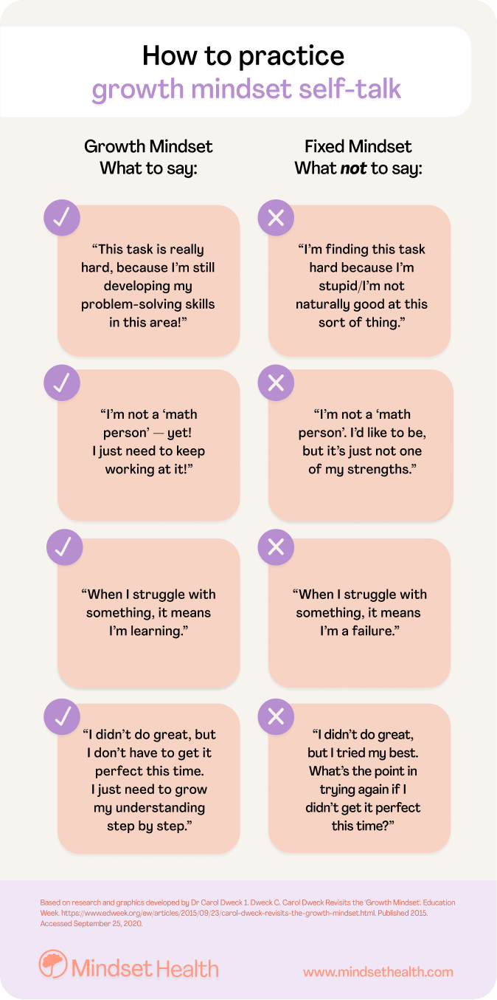

Neuroplasticity and Growth Mindset
5 May 2022
In this blog, I am going to talk about two concepts about how our brain works: neuroplasticity and growth mindset. Our brain might work a bit different with what we expected. It is beneficial for us to know more about it and know better about ourselves.
Neuroplasticity
The term neuroplasticity can be broke down to two parts: neuro and plasticity. Neuro means nervous system, which consists of brain spinal and all the nerves that send and receive information to and from the brain. Plasticity means mouldable. Putting these two together, neuroplasticity means a mouldable brain. That is to say our brain has the ability to rewire itself and to change and adapt as we learn and experience. All it requires are repetition and intensity.
You may remember the struggles you had when the first time trying to drive a car. Was it like a mission impossible? Or you may remember the first week of your last or current job. How was it like compare to how you feel after three month in the role? These all are examples of how our brain rewire itself and help us to learn new skills or adapt to a new job.
Something more fascinating about neuroplasticity is we can increase it in many ways that can be done easily, including:
enriching your environment, for example traveling, reading, learning a new language
getting plenty of sleep
doing exercise regularly
So now, try to give yourself challenges constantly, sleep well, and add work out to your weekly schedule, your brain neuroplasticity will be beneficial from all of these.
To learn more about neuroplasticity watch this TED Talk by Dr. Lara Boyd here.
Or read this informative, clear and very well explained article here.
Growth Mindset
Growth mindset is proposed by Stanford professor Carol Dweck in her book Mindset. In her book she wrote “A growth mindset is when students understand that their abilities can be developed.” In contrast, a fixed mindset means people believe their abilities and intelligence is fixed. That means if you are not good at something, you believe you will never be good at it.
To learn more about growth mindset, watch this TED Talk by professor Carol Dweck.
Studies show that a growth mindset is affecting our motivation and academic performance in a positive way. There are other benefits of having a growth mindset including: reduced burnout, accept new challenges, learn new skills, improved self-esteem.
As we discussed above, neuroplasticity allows our brains to rewire. We can practice and develop a growth mindset. There are several ways to do that, one of it is to have a self-talk with yourself.
Integrating Growth Mindset into my learning journey
I was trapped in a fixed mindset for a long time. When the first time I was considering to have a career change, I wasn’t even considering to become a software developer. I simply thought that I can not code because I was not doing well in math when I was in school. Luckily I did read something about growth mindset and I am glad that I made my first move by joining Dev Academy. I took a lot from the Ted talk by Carol Dewck, especially that part she talked about rating not yet. It is not ‘not achieved’, it is just ‘not yet achieved.’
This is the sprint 4 of foundation, things that we are learning are getting tricky and I am feeling a bit overwhelmed sometimes. I would like to use the growth mindset to guide me through the rest of this learning journey, and probably to all aspects of my life as well. A growth mindset tells me to keep in mind that, if I am struggling, instead of thinking I am failing, to believe that I am learning. All I need is to put more effort in it. And eventually, I can master it.